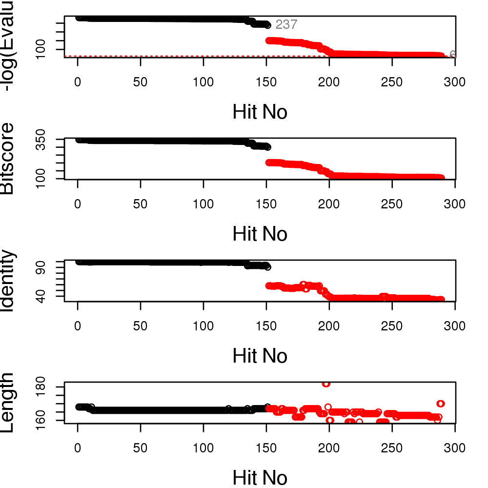
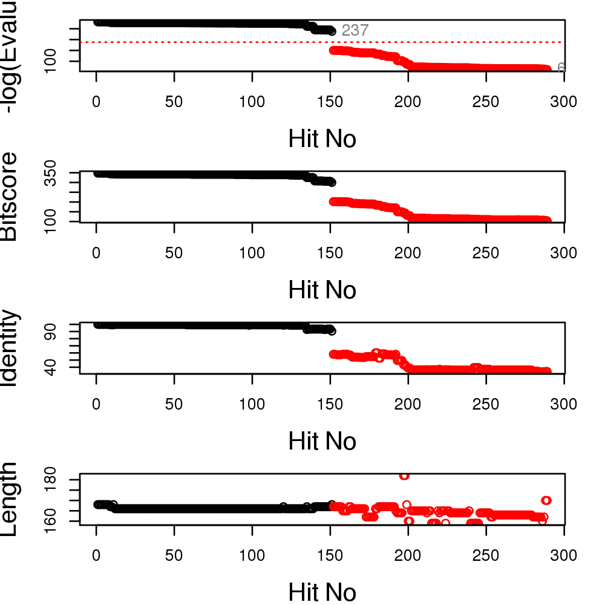
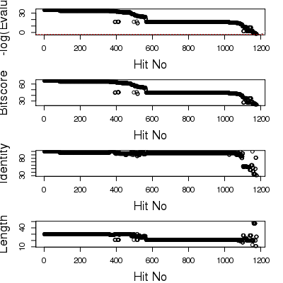

Plot a Summary of BLAST Hit Statistics.
Usage
plot(x, cutoff = NULL, cut.seed = 110, mar = c(4, 4, 1, 2), cex.lab = 1.5, ...)
Arguments
- x
- BLAST results as obtained from the function
blast.pdb. - cutoff
- A numeric cutoff value, in terms of minus the log of the evalue, for returned hits. If null then the function will try to find a suitable cutoff near ‘cut.seed’ which can be used as an initial guide (see below).
- cut.seed
- A numeric seed cutoff value, used for initial cutoff estimation.
- mar
- A numerical vector of the form c(bottom, left, top, right) which gives the number of lines of margin to be specified on the four sides of the plot.
- cex.lab
- a numerical single element vector giving the amount by which plot labels should be magnified relative to the default.
- ...
- extra plotting arguments.
Description
Produces a number of basic plots that should facilitate hit selection from the match statistics of a BLAST result.
Details
Examining plots of BLAST alignment lengths, scores, E-values and normalized scores (-log(E-Value), see ‘blast.pdb’ function) can aid in the identification sensible hit similarity thresholds.
If a ‘cutoff’ value is not supplied then a basic hierarchical clustering of normalized scores is performed with initial group partitioning implemented at a hopefully sensible point in the vicinity of ‘h=cut.seed’. Inspection of the resultant plot can then be use to refine the value of ‘cut.seed’ or indeed ‘cutoff’. As the ‘cutoff’ value can vary depending on the desired application and indeed the properties of the system under study it is envisaged that ‘plot.blast’ will be called multiple times to aid selection of a suitable ‘cutoff’ value. See the examples below for further details.
Value
Produces a plot on the active graphics device and returns a three component list object: hits an ordered matrix detailing the subset of hits with a normalized score above the chosen cutoff. Database identifiers are listed along with their cluster group number. pdb.id a character vector containing the PDB database identifier of each hit above the chosen threshold. gi.id a character vector containing the gi database identifier of each hit above the chosen threshold.
References
Grant, B.J. et al. (2006) Bioinformatics 22, 2695--2696.
Note
TO BE IMPROVED.
Examples
b2 <- blast.pdb( pdbseq(read.pdb( get.pdb("4q21", URLonly=TRUE) )) )HEADER ONCOGENE PROTEIN 25-SEP-91 4Q21 Searching ... please wait (updates every 5 seconds) RID = 8X2CG9PK015 .. Reporting 289 hitsraw.hits <- plot.blast(b2)* Possible cutoff values include: 237 62 Yielding Nhits: 151 289 ** Chosen cutoff value of: 62 Yielding Nhits: 289
top.hits <- plot.blast(b2, 188)* Possible cutoff values include: 237 62 Yielding Nhits: 151 289
head(top.hits$hits)pdb.id gi.id group 1 "6Q21_A" "231226" "1" 2 "6Q21_B" "231227" "1" 3 "6Q21_C" "231228" "1" 4 "6Q21_D" "231229" "1" 5 "1IOZ_A" "15988032" "1" 6 "1AA9_A" "157829765" "1"blast <- blast.pdb( pdbseq(read.pdb( get.pdb("2BN3", URLonly=TRUE) )))HEADER RADIATION DAMAGE 18-MAR-05 2BN3 PDB has ALT records, taking A only, rm.alt=TRUE Searching ... please wait (updates every 5 seconds) RID = 8X2CY9W9015 . Reporting 1177 hitsraw.hits <- plot(blast)* Possible cutoff values include: -3 Yielding Nhits: 1177 ** Chosen cutoff value of: -3 Yielding Nhits: 1177
top.hits <- plot(blast, cut.seed=20)* Possible cutoff values include: 24 7 -3 Yielding Nhits: 548 1127 1177 ** Chosen cutoff value of: 24 Yielding Nhits: 548
head(top.hits$pdb.id)[1] "1APH_B" "1BPH_B" "1CPH_B" "1DPH_B" "4INS_B" "4INS_D"#pdbFiles <- get.pdb(substr(top.hits$pdb.id, 1, 4), path="downloadedPDBs") #pdbsplit(pdbFiles, path="downloadedPDBs/PDB_chains")